Aquatic composition and equilibrium
Week 2 — Aquatic composition and carbonate chemistry
About this lecture
In August 2022, hundreds of tonnes of dead fish washed up along the Oder, the river between Poland and Germany. Investigators had to work out what was in the water. Their answer combined several factors: unusually salty water from industrial discharges, low flow, heat, and a bloom of a toxic alga that thrives in salty water.
Every step of that investigation started from a water analysis: a table of numbers.
Today you will learn to:
- read what each number means (total, species, filtered);
- check a table with charge balance;
- decide when activity matters, and split a weak acid at a given pH.
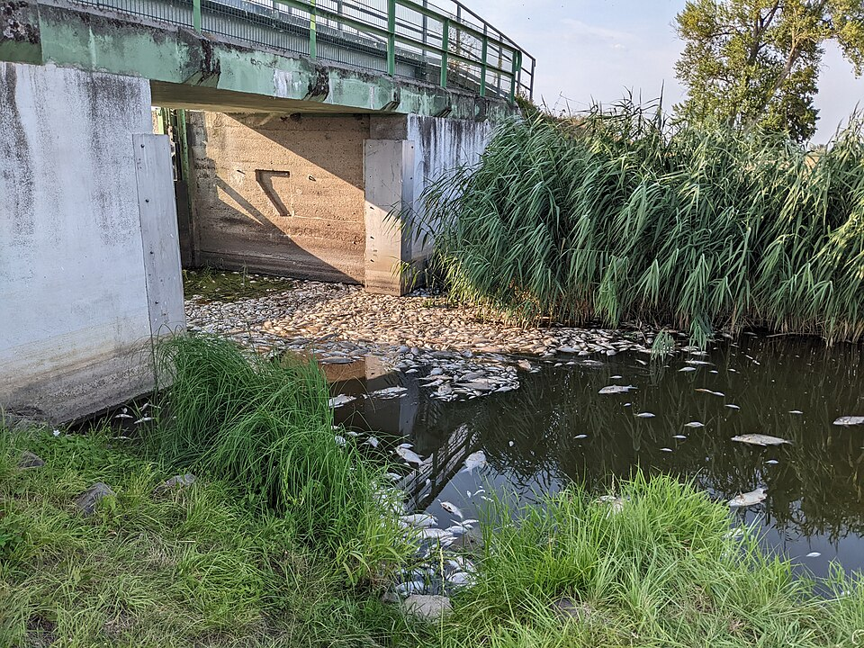
Dead fish on the Oder, August 2022. Photo: Hanno Böck, CC0, Wikimedia Commons.Water is a reaction medium
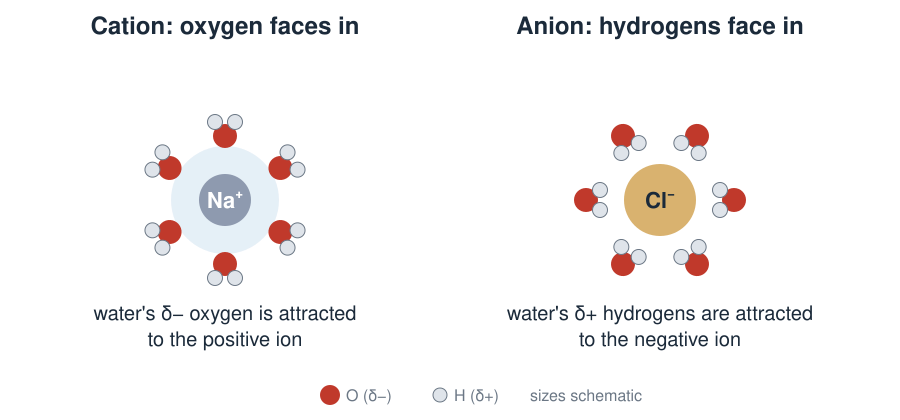
Water molecules are polar: the oxygen end is slightly negative, the hydrogen ends slightly positive. That is why salts dissolve: each ion is wrapped in a hydration shell of oriented water molecules.
A dissolved ion is therefore not alone. It interacts with water, with other ions and with any molecule that can bind it.
So a water sample is a mixture of reacting species. Before we calculate anything, we need to know which of those species a laboratory number actually describes.
What does one number in a water table mean?
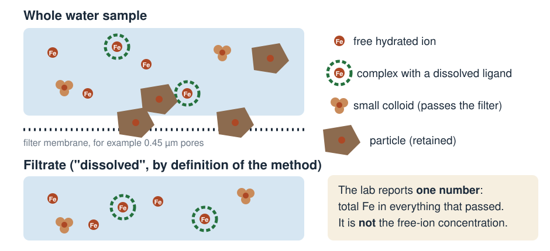
Ask three questions of every entry:
- Is it an element total or one species?
- Whole water or a filtered fraction? “Dissolved” usually means “passed a 0.45 µm filter”.
- Is the mass reported as the element (mg Fe/L) or as a compound (mg CaCO₃/L)?
A filtered total can include complexes and small colloids, not only free ions.
Mass, moles and charge
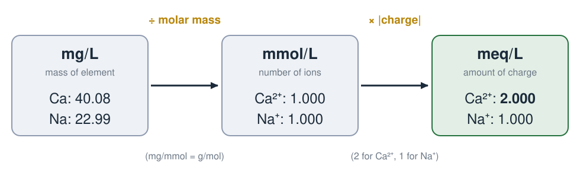
Laboratories report mg/L, but chemistry counts particles and charges. Divide by molar mass to get mmol/L. Multiply by the size of the charge to get milliequivalents (meq/L).
A calcium result of 40.08 mg/L is 1.000 mmol/L, but 2.000 meq/L, because each Ca²⁺ carries two charges.
Charge must balance
Bulk water is electrically neutral. For each ion, multiply its concentration by the size of its charge. Then add up the cations and, separately, the anions. The two totals must be equal.
Worked example (mmol/L): Ca²⁺ 0.500, Mg²⁺ 0.250, Na⁺ 0.500; HCO₃⁻ 1.200, Cl⁻ 0.400, SO₄²⁻ 0.200.
Cations: 1.000 + 0.500 + 0.500 = 2.000 meq/L. Anions: 1.200 + 0.400 + 0.400 = 2.000 meq/L.
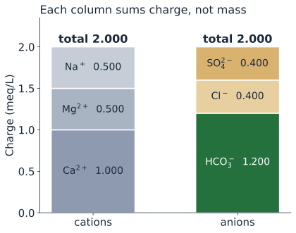
When the balance does not close
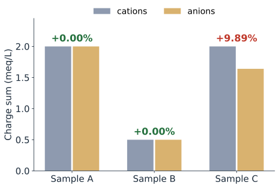
Three constructed samples from the R activity. A and B balance. Sample C does not:
\text{imbalance}=\frac{\text{cations}-\text{anions}}{\text{cations}+\text{anions}}\times100
=\frac{2.00-1.64}{3.64}\times100=+9.89\%
A positive sign means anions are missing. The water itself is not charged. Something in the analysis or the table is wrong or incomplete.
Find the cause; never fudge the data
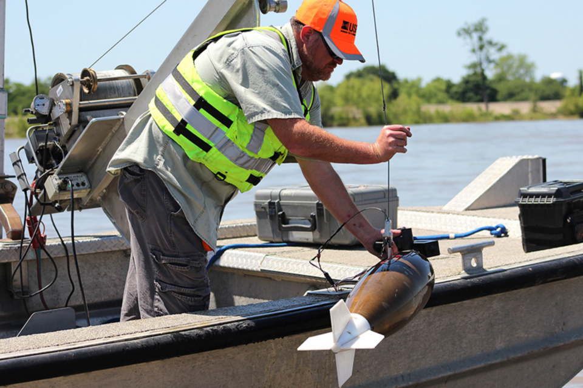
USGS hydrologist collecting a water-quality sample, Mississippi River at Baton Rouge. Photo: Scott Dennis/USGS, public domain, Wikimedia Commons.In sample C, sulfate was entered as 1.9212 mg/L. The laboratory record shows the decimal point was misplaced: the true value is 19.212 mg/L.
- 1.9212 mg/L → 0.040 meq/L
- 19.212 mg/L → 0.400 meq/L
The missing 0.36 meq/L is exactly the gap. After the documented correction all three samples balance.
Never adjust raw numbers until a table balances. Keep the original, record the evidence, then correct.
Same ions, different waters
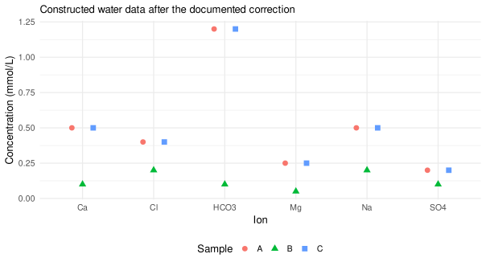
After the correction, sample C coincides with A. Sample B is a much more dilute water: every ion is lower.
The plot shows mmol/L, the number of ions. The charge balance used meq/L. For divalent Ca²⁺, Mg²⁺ and SO₄²⁻ the two differ by a factor of two.
Comparing waters is easier once the table has been checked. A salty river like the Oder in 2022 would stand out immediately in Na⁺ and Cl⁻.
Ions feel each other
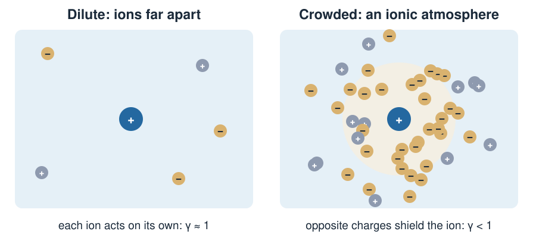
In dilute water each ion acts almost on its own. In salty water, each ion is surrounded by a slight excess of opposite charge, an ionic atmosphere. That shielding makes the ion behave as if it were less concentrated.
Equilibrium constants are therefore written with activities:
a_i=\gamma_i\,c_i/c^\circ
γ is the activity coefficient; c° = 1 mol/L. When γ ≈ 1, activity ≈ concentration.
Ionic strength measures how crowded the water is
I=\tfrac12\left(c_1z_1^2+c_2z_2^2+c_3z_3^2+\dots\right)
one term for every ion in the water.
The charge is squared, so divalent ions count four times as much per mole.
Worked example: 1.00 mmol/L Ca²⁺ and 2.00 mmol/L Cl⁻:
I = ½ (1.00 × 4 + 2.00 × 1) = 3.00 mmol/L = 0.00300 mol/L.
This is not the total concentration (3.00 mmol/L of ions is a coincidence here) and not the mass of salt.
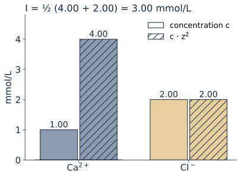
How big is the activity correction?
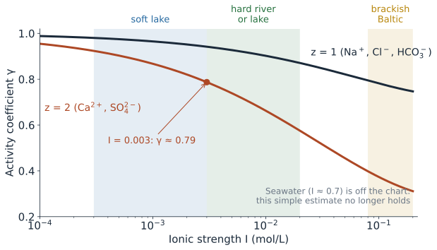
Estimated with the Davies equation. At I = 0.003 a monovalent ion has γ ≈ 0.94 and a divalent ion γ ≈ 0.79. In brackish water such as the central Baltic, divalent ions fall to roughly γ ≈ 0.35. Freshwater calculations tolerate γ ≈ 1; salty water does not.
A simple acid: the ratio rule
For a weak acid \mathrm{HA\rightleftharpoons H^++A^-}:
\frac{[\mathrm{A^-}]}{[\mathrm{HA}]}=10^{\,\mathrm{pH}-pK_a}
- pH = pKa: ratio 1, half each
- pH = pKa + 1: ratio 10, A⁻ fraction 10/11 = 0.909
- pH = pKa − 1: ratio 0.1, A⁻ fraction 0.091
The fraction of A⁻ is r/(1+r), with r the ratio.
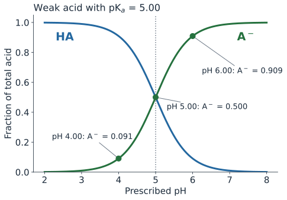
Worked example: splitting a total
A fictitious acid HA has pKa = 5.00. The total HA + A⁻ is 0.200 mmol/L. The pH is measured as 6.00.
- Ratio: r=10^{6.00-5.00}=10
- Split the total 1 : 10, that is into 11 parts
- HA = 0.200/11 = 0.01818 mmol/L
- A⁻ = 0.200 × 10/11 = 0.1818 mmol/L
Check: 0.01818 + 0.1818 = 0.200.
The pH was given. A distribution formula does not produce a pH; that needs a measurement or another balance.
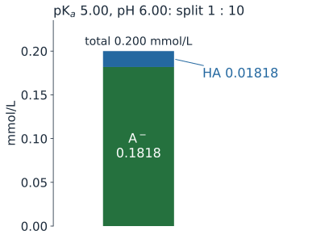
Why the split matters: ammonia and fish
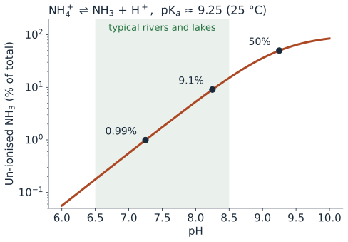
Ammonium is a weak acid:
\mathrm{NH_4^+\rightleftharpoons NH_3+H^+},\quad pK_a\approx9.25\ (25\ ^\circ\mathrm{C})
The uncharged NH₃ passes easily through fish gills and is the main toxic form. The ion NH₄⁺ is far less harmful.
Same total ammonia, but NH₃ rises tenfold per pH unit: about 1% at pH 7.25, 9% at pH 8.25. Water-quality limits for ammonia therefore depend on pH and temperature.
Check yourself
- Convert 24.31 mg/L Mg²⁺ (molar mass 24.31 g/mol) to mmol/L and meq/L.
- A table gives 1.50 meq/L cations and 1.50 meq/L anions. Does that prove every value is correct?
- Which has the larger ionic strength: 1 mmol/L NaCl or 1 mmol/L MgSO₄?
- An acid has pKa 4.00. At pH 6.00, what fraction is in the A⁻ form?
- “Dissolved iron is 0.30 mg/L, so the free Fe³⁺ is 0.30 mg/L.” What is wrong?
A different kind of change: redox
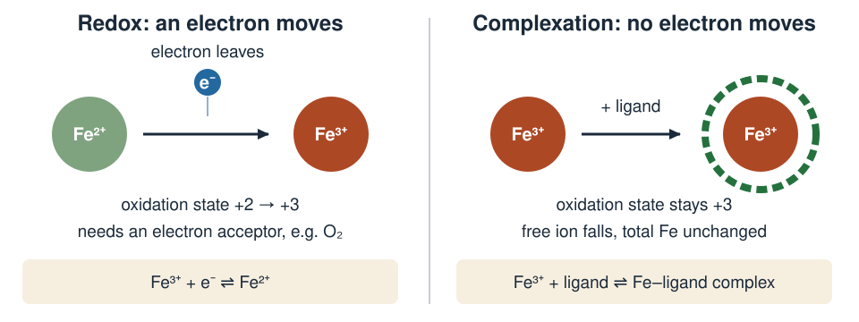
In a redox reaction an electron moves and an oxidation state changes: Fe²⁺ → Fe³⁺. In complexation a ligand binds but no electron moves: Fe³⁺ stays +3. Both change the free-ion concentration, for different reasons. Both pH and redox conditions control metal speciation.
Redox you can see: iron in a stream
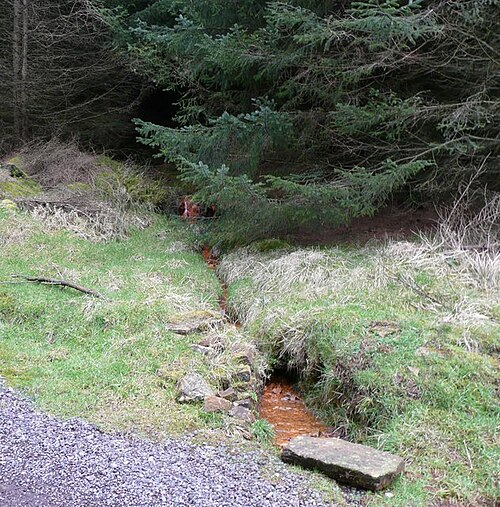
Ochre stream, Wooldale, West Yorkshire, England. Photo: Humphrey Bolton, CC BY-SA 2.0, Wikimedia Commons.Groundwater without oxygen can carry dissolved Fe²⁺, which is colourless. When it emerges and meets air:
\mathrm{4Fe^{2+}+O_2+10H_2O\rightarrow4Fe(OH)_3(s)+8H^+}
Iron(III) is almost insoluble near neutral pH, so an orange-brown oxide coats the stream bed.
The reaction also releases H⁺: oxidising iron is an acid source, which matters for mine drainage in week 3.
Favoured is not the same as fast
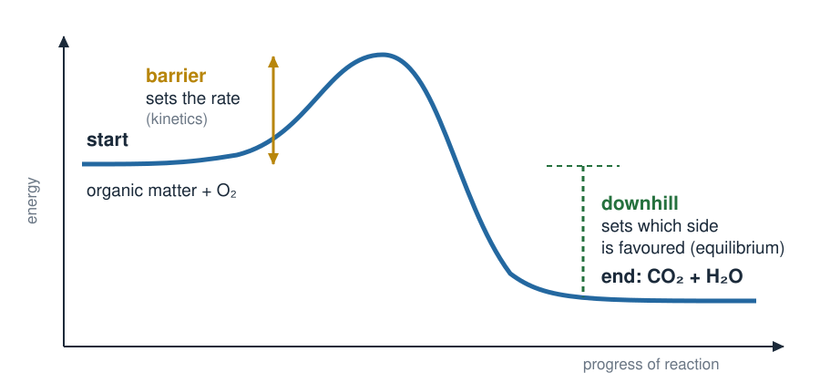
Equilibrium tells you which state is favoured under given conditions. Kinetics tells you how fast it is reached.
- Organic matter and O₂ react strongly downhill, yet leaves survive in a lake for months: the barrier is high without microbes.
- Fe²⁺ oxidation by O₂ is fast near neutral pH but very slow in acidic water.
An equilibrium model predicts the destination, not the travel time.
Back to the Oder: reading the analysis
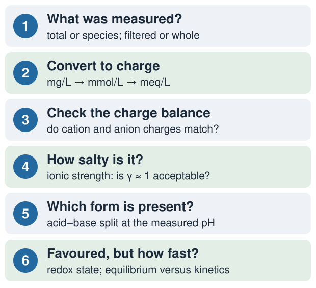
Investigators worked through questions like these:
- What was measured? Conductivity, major ions, oxygen, pH, nutrients, algae.
- Charge and salt: high Na⁺ and Cl⁻ meant high ionic strength. Freshwater constants and γ ≈ 1 no longer apply.
- Speciation: pH and temperature control toxic forms such as NH₃.
- Rates: a bloom developed over weeks of low, warm flow.
No single number explained the fish kill. A checked, interpreted analysis did.
Common mistakes to avoid
- Adding mg/L of different ions. Convert to meq/L before comparing charge.
- Forgetting the charge. 1 mmol/L Ca²⁺ is 2 meq/L, and its charge counts four times in ionic strength.
- “Dissolved” means free ion. A filtered total includes complexes and colloids.
- Forcing a balance. Investigate an imbalance; correct only with evidence.
- Ratio equals fraction. A ratio of 10 is a fraction of 10/11.
- A distribution formula gives pH. The pH must be measured or found from another balance.
- Equilibrium means it happens. It tells you the direction, not the speed.
Explore: charge balance and ionic strength
Worked ion table: 2.000 meq/L cations and 2.000 meq/L anions; ionic strength 2.95 mmol/L; γ about 0.94 and 0.79.
Change table entries and add salt; compare the charge balance with ionic strength and activity.
Summary
| Concept | Key fact |
|---|---|
| A water-table entry | element total or species; filtered or whole; reported as element or compound |
| Units | mg/L ÷ molar mass = mmol/L; × |charge| = meq/L |
| Charge balance | total cation charge = total anion charge (meq/L); an imbalance flags errors or missing ions |
| Data practice | keep raw values; correct only with documented evidence |
| Ionic strength | I = ½ (c₁z₁² + c₂z₂² + …); divalent ions weigh four times |
| Activity | a = γc; γ ≈ 1 only in dilute water; salty water needs a correction |
| Weak acid | [A⁻]/[HA] = 10^(pH − pKa); fraction = r/(1 + r) |
| Ammonia | NH₃ (toxic form) rises tenfold per pH unit below pKa ≈ 9.25 |
| Redox | electron transfer changes oxidation state; binding does not |
| Equilibrium vs kinetics | direction and end point versus speed |
Next: Carbonate species and alkalinity. Why did acid rain kill fish in some Swedish lakes but not others? Then the exercises and the notes.
 Forest damaged by acid deposition, Jizera Mountains, Czech Republic. Photo: Lovecz, public domain, Wikimedia Commons.
Forest damaged by acid deposition, Jizera Mountains, Czech Republic. Photo: Lovecz, public domain, Wikimedia Commons.